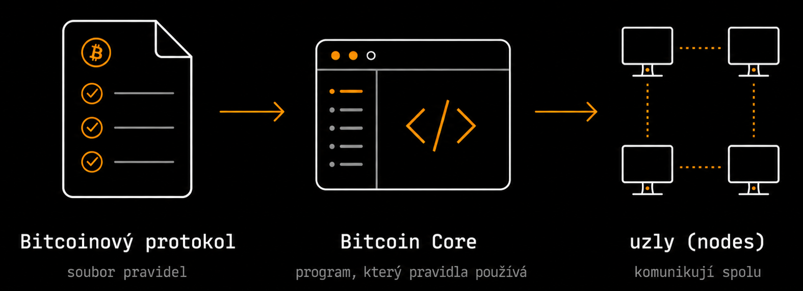
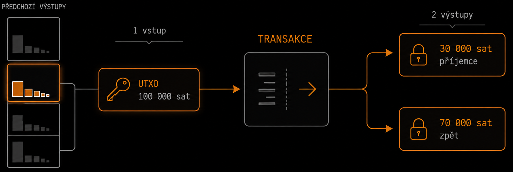
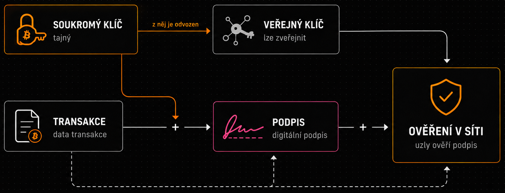
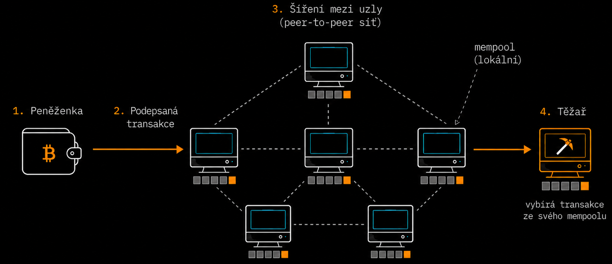
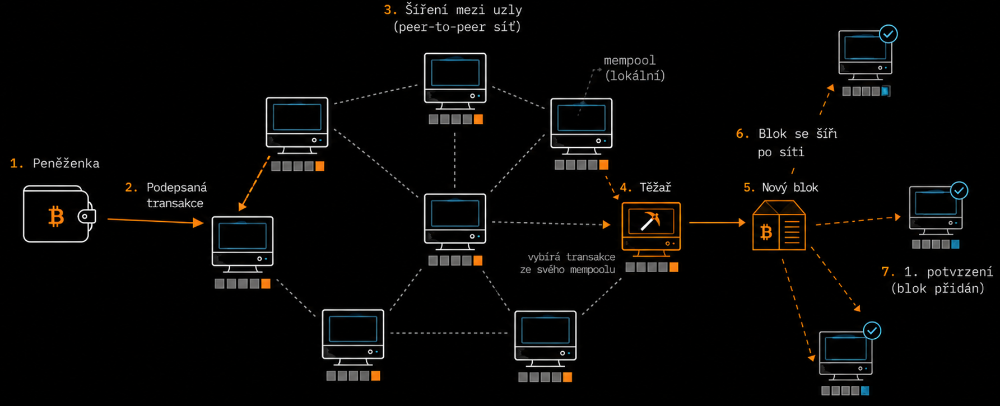
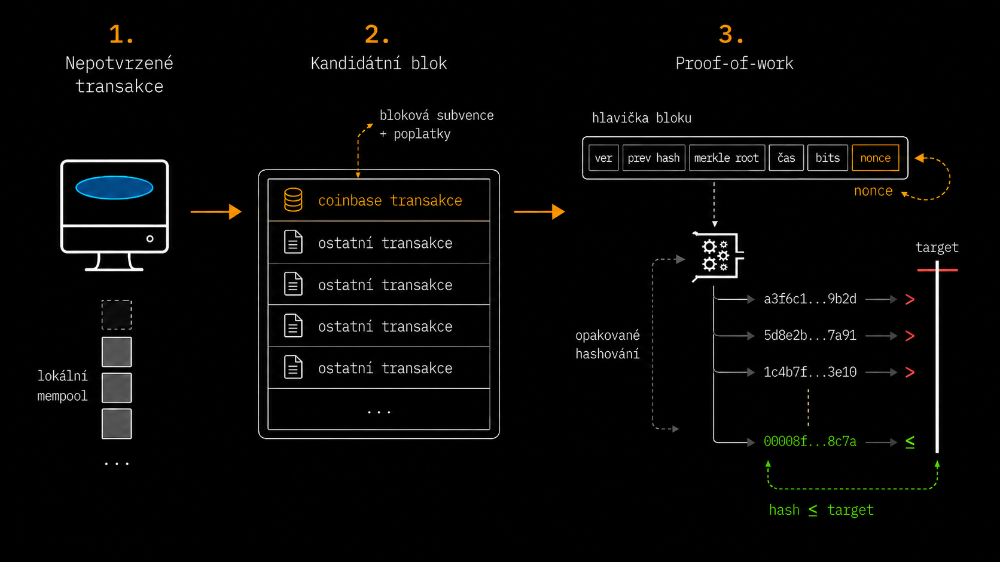
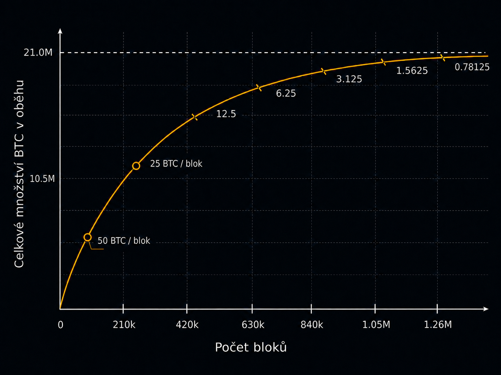

Bitcoin jako systém pravidel
Bitcoin nemá jeden hlavní server, centrální databázi ani instituci, která by rozhodovala o tom, které transakce jsou platné. Jeho fungování je založeno na veřejně známém souboru pravidel, podle kterých spolu komunikují počítače zapojené do bitcoinové sítě. Tato pravidla určují například podobu transakcí a , podmínky jejich platnosti, způsob vzniku nových bitcoinů nebo postup, podle kterého se určuje platná historie sítě [1, 2, 3].
Tento soubor pravidel označujeme jako . Protokol není konkrétní program, ale soubor pravidel, podle kterých programy zapojené do bitcoinové sítě pracují. Díky tomu si mohou navzájem rozumět, předávat si data ve stejné podobě a stejným způsobem posuzovat například transakce a bloky.
Jedním z programů, který pravidla bitcoinového protokolu používá, je . Pokud jej uživatel spustí na svém počítači a připojí k bitcoinové síti, jeho počítač se stane jedním z jejích uzlů (anglicky nodes). se spojí s několika dalšími uzly a vyměňuje si s nimi informace o transakcích a blocích. Neexistuje přitom jeden centrální server, přes který by veškerá komunikace procházela. Uzly komunikují přímo mezi sebou, a vytvářejí tak síť [1, 7].
Přijatým informacím však uzel automaticky nedůvěřuje. Pokud mu jiný uzel předá například novou transakci nebo blok, Bitcoin Core provede kontroly zabudované v programu a ověří, zda přijatá data odpovídají pravidlům bitcoinového protokolu. U transakce například kontroluje, zda má odesílatel k dispozici dostatek bitcoinů k utracení a zda je oprávněn s nimi nakládat. Pokud přijatá data pravidlům vyhovují, uzel je přijme a může o nich informovat další uzly, se kterými je přímo propojen. Ty provedou vlastní kontrolu a platnou informaci mohou předat zase dál. Transakce a bloky se tak postupně šíří bitcoinovou sítí. Pokud přijatá data pravidla porušují, uzel je odmítne [1, 7].
Tím se zároveň vysvětluje rozdíl mezi bitcoinovým protokolem a konkrétním programem, který jej používá. Zdrojový kód Bitcoin Core je veřejný a kdokoli jej může upravit nebo vytvořit vlastní software. Samotnou změnou svého programu však nezmění pravidla, podle kterých pracují ostatní uzly. Pokud by například někdo upravil svůj software tak, aby připouštěl vznik většího celkového množství bitcoinů, jeho vlastní program by taková data mohl považovat za platná. Ostatní uzly používající dosavadní pravidla by je však při vlastní kontrole odmítly. Změna jednoho programu tedy automaticky neznamená změnu pravidel celé bitcoinové sítě [1, 7, 8].

Co vlastně znamená „bitcoin“?
Slovo Bitcoin se používá v několika úzce souvisejících významech. Bitcoin s velkým počátečním písmenem označuje celý systém, jeho protokol nebo síť. Bitcoin s malým písmenem označuje měnovou jednotku používanou uvnitř tohoto systému, pro kterou se běžně používá zkratka BTC.
Jeden bitcoin lze rozdělit na 100 000 000 nejmenších jednotek označovaných jako , přičemž jeden satoshi odpovídá 0,00000001 BTC.
[1, 4].| BTC | sats |
|---|---|
| 1 BTC | 100 000 000 sats |
| 0,1 BTC | 10 000 000 sats |
| 0,01 BTC | 1 000 000 sats |
| 0,001 BTC | 100 000 sats |
| 0,00000001 BTC | 1 sat |
Kde jsou bitcoiny?
Co v bitcoinovém systému vlastně znamená „mít bitcoin“ a kde je tato hodnota zaznamenána? Bitcoin nemá jednotlivé digitální mince uložené v nebo v počítači a nepoužívá ani bankovní model účtů, ve kterém by existoval centrální záznam o tom, že určitý uživatel vlastní například 1,25 BTC. Hodnota je v systému reprezentována prostřednictvím transakcí a jejich výstupů [1, 4, 5].
Pokud například někdo pošle uživateli určité množství bitcoinů, neznamená to, že se digitální mince přesunou do jeho peněženky nebo se připíšou na jeho účet. Odeslaná transakce vytvoří nový výstup představující určité množství BTC a podmínky určující, za jakých okolností může být tato hodnota později utracena. Dokud tento výstup ještě nebyl použit v další platné transakci, označuje se jako Unspent Transaction Output () tedy neutracený výstup transakce [1, 4, 5].
Pro základní představu lze transakční výstup přirovnat k uzamčené schránce s určitou bitcoinovou hodnotou. Nejde o skutečný objekt ani o samostatné místo v , ale o užitečnou pomůcku pro pochopení principu: při utrácení transakce použije jeden nebo více existujících výstupů, splní jejich podmínky a z jejich hodnoty vytvoří výstupy nové. Ty jsou znovu spojeny s podmínkami určujícími, jak mohou být v budoucnu utraceny [9].
UTXO není zbytek po transakci, ale samostatný dosud neutracený výstup. Při jeho použití se původní UTXO nesnižuje pouze o odesílanou část, ale spotřebuje se celé a transakce vytvoří výstupy nové. Ve zjednodušeném příkladu bez uvažování transakčního poplatku může uživatel použít UTXO o hodnotě 100 000 sat a poslat 30 000 sat příjemci. Transakce přitom vytvoří výstup 30 000 sat pro příjemce a nový výstup 70 000 sat zpět pro odesílatele. Původní UTXO o hodnotě 100 000 sat tím přestává být neutraceným výstupem a je nahrazeno novými výstupy [1, 2, 4].

proto není účet se zůstatkem a bitcoinová peněženka neobsahuje samotné bitcoiny. Peněženka spravuje údaje potřebné k nakládání s příslušnými výstupy a dokáže určit, které UTXO může uživatel utratit. Jejich hodnoty následně sečte a zobrazí jako výsledný zůstatek
Jednotlivé transakce na sebe tímto způsobem navazují. Vstupy nové transakce odkazují na dřívější výstupy a nově vytvořené výstupy se mohou později stát vstupy dalších transakcí. Z pohledu historie tak vzniká graf vazeb mezi transakcemi a jejich výstupy. Soubor všech právě existujících neutracených výstupů se označuje jako UTXO set. Plně ověřující uzel si tento stav vytváří z historie blockchainu a průběžně jej aktualizuje: utracené výstupy odstraňuje a nově vzniklé přidává [1, 5, 9].
Vlastnictví bitcoinů neznamená držení konkrétních digitálních mincí ani existenci zůstatku vedeného na účtu. Zjednodušeně jde o možnost utratit jeden nebo více UTXO představujících určitou bitcoinovou hodnotu. Přesná konstrukce transakcí, způsob určování podmínek pro utracení a role adres, klíčů a peněženek budou podrobněji vysvětleny v dalších částech.
Jak se bitcoin ovládá?
Pokud Bitcoin nevede účty na konkrétní jména, musí existovat jiný způsob, jak určit, kdo může určitý transakční výstup utratit. K tomu Bitcoin využívá . Uživatel se tedy síti neprokazuje jménem ani heslem k účtu, ale prostřednictvím kryptografických postupů může prokázat oprávnění s příslušným výstupem nakládat [1, 2, 4].
Základem je . Jde o tajnou číselnou hodnotu, kterou bitcoinová peněženka obvykle vytvoří automaticky. Uživatel ji tedy při běžném používání nemusí sám vymýšlet ani zapisovat jako dlouhé číslo. Soukromý klíč musí zůstat tajný, protože umožňuje autorizovat utracení bitcoinů, které jsou s ním spojeny. Kdo k němu získá přístup, může za příslušných podmínek vytvářet platné podpisy potřebné k jejich utracení. proto soukromé klíče chrání a v praxi se jejich zabezpečení řeší například ochranou samotné peněženky a bezpečným uložením její zálohy [1, 4].
Ze soukromého klíče peněženka matematicky odvodí odpovídající . Oba klíče tak tvoří vzájemně související dvojici. Na rozdíl od soukromého klíče nemusí být veřejný klíč tajný. Výpočet je navržen tak, že ze soukromého klíče lze veřejný klíč snadno získat, opačným směrem však není prakticky možné soukromý klíč dopočítat [1, 4].
Když chce uživatel své bitcoiny utratit, jeho peněženka vezme data nové transakce a pomocí soukromého klíče vytvoří . Digitální podpis není obrázek podpisu ani jméno uživatele, ale kryptograficky vytvořená data vztahující se ke konkrétní transakci. Podpis je svázán právě s podepisovanými daty, takže nejde o univerzální „odemykací kód“, který by bylo možné jednoduše zkopírovat a použít pro jinou transakci. Do sítě je následně možné předat transakci spolu s podpisem a potřebnými veřejnými údaji, zatímco samotný soukromý klíč zůstává v peněžence [1, 2, 4, 9].
Veřejný klíč slouží k ověření tohoto podpisu. Podpis a veřejný klíč se sobě nerovnají; jde o různé údaje, které jsou matematicky propojeny prostřednictvím soukromého klíče. Bitcoinový uzel může pomocí veřejného klíče, podpisu a podepsaných dat ověřit, zda byl podpis vytvořen odpovídajícím soukromým klíčem a zda se vztahuje právě k dané transakci. Pokud by se podepsaná data změnila nebo byl použit nesprávný podpis či veřejný klíč, ověření by neprošlo.
Zjednodušeně lze tedy vztah mezi těmito údaji vyjádřit takto: ze soukromého klíče vzniká veřejný klíč a pomocí soukromého klíče se podepisuje transakce. Veřejný klíč pak umožňuje ostatním ověřit vytvořený podpis. Bitcoin tak může ověřit oprávnění k utracení, aniž by se tajný soukromý klíč dostal do sítě.

Současně musí být možné určit, který veřejný klíč je pro konkrétní výstup relevantní. Podmínka vytvořená při předchozí transakci je proto spojena s kryptografickými údaji příjemce. Při pozdějším utracení ověřuje nejen samotný podpis, ale také to, zda předložené veřejné údaje odpovídají podmínce původního výstupu [1, 8].
S kryptografickými klíči souvisí také . Pro základní pochopení ji lze chápat jako údaj, který příjemce předá plátci, aby mu mohl poslat bitcoiny. Adresa není účet se zůstatkem ani samotný veřejný klíč. Slouží jako praktický způsob, jak vytvořit nový transakční výstup spojený s podmínkami, které bude později schopen splnit zamýšlený příjemce [1, 8].
Je proto přesnější mluvit o kontrole nad bitcoinem než automaticky o vlastnictví. nezná identitu člověka ani neposuzuje, komu určitá hodnota patří. Ověřuje pouze to, zda jsou při vytváření nové transakce splněny podmínky potřebné k utracení použitých výstupů.
Peněženka a cesta transakce do sítě
V praxi uživatel s obvykle nepracuje přímo. Spravuje je bitcoinová , která zároveň dokáže zjistit, která může uživatel utratit, vytvořit novou transakci a pomocí příslušných soukromých klíčů ji podepsat. Samotné bitcoiny však peněženka neuchovává. Hodnota je reprezentována dosud neutracenými výstupy předchozích transakcí – UTXO – evidovanými v bitcoinovém systému [1, 8].
Při odeslání platby nedochází k přenosu digitální mince z jednoho zařízení do druhého. Peněženka vytvoří transakci, která spotřebuje vybrané dosavadní UTXO a vytvoří nové výstupy. Část hodnoty může například připadnout příjemci, část se může vrátit odesílateli jako nový výstup a rozdíl mezi celkovou hodnotou vstupů a výstupů tvoří . Původní UTXO jsou přitom spotřebována celá a po potvrzení transakce jsou nahrazena nově vytvořenými výstupy [1, 4].
Podepsaná transakce je následně předána jednomu nebo více bitcoinovým . Uzel ji ověří například z hlediska její struktury, použitých vstupů, splnění podmínek pro jejich utracení a skutečnosti, zda odkazované výstupy již nebyly utraceny. Pokud transakci přijme, může ji uložit mezi své dosud nepotvrzené transakce a oznámit ji dalším uzlům, které provedou vlastní kontrolu a mohou ji šířit dál. Transakce se tak sítí postupně dostává k dalším účastníkům, včetně uzlů používaných [1, 2, 8, 9].
Transakce je v této fázi platná, ale dosud nepotvrzená – ještě nebyla zahrnuta do žádného . Lokální sadě takových transakcí se běžně říká . Neexistuje jeden společný mempool pro celý Bitcoin. Jednotlivé uzly si spravují vlastní mempooly, a proto se mohou v konkrétním okamžiku lišit v tom, které nepotvrzené transakce znají nebo uchovávají [1].
Těžaři vybírají transakce, které znají jejich vlastní uzly, a mohou je zahrnout do . Jakmile je nalezen platný blok, začne se sítí šířit samotný blok. Ostatní uzly jej nezávisle ověří a pokud jej přijmou jako součást , získají transakce obsažené v tomto bloku první potvrzení. Do té doby zůstávají pouze nepotvrzenými transakcemi šířenými mezi uzly [1, 2, 9].

Jak z transakcí vzniká společná historie
může prokázat, že jsou splněny podmínky pro utracení určitého výstupu, sám o sobě ale neřeší problém . Dokud transakce není potvrzena v , může totiž vzniknout jiná transakce, která se pokouší utratit stejné jiným způsobem. Takové transakce jsou navzájem konfliktní a obě nemohou být součástí stejné platné historie. Jednotlivé uzly navíc mohou v určitém okamžiku znát různé konfliktní verze, protože se transakce sítí šíří postupně. Bitcoin proto potřebuje mechanismus, podle kterého se síť dlouhodobě shodne na jediné historii, v níž může být konkrétní výstup utracen pouze jednou [1, 2, 3].
Do procesu zde vstupují . Těžař vybírá platné nepotvrzené transakce, které zná jeho , a sestavuje z nich . Součástí je jeho , která obsahuje mimo jiné kryptografický odkaz na předchozí blok, souhrnný transakcí v bloku a hodnotu označovanou jako . Těžař opakovaně mění nonce a případně i další údaje, čímž vytváří nové varianty hlavičky, a pro každou z nich počítá kryptografický hash. Cílem je nalézt takovou variantu, jejíž hash je jako číselná hodnota menší nebo roven aktuálně stanové . Protože výsledek hashování nelze předem předvídat, nalezení vyhovující hodnoty obvykle vyžaduje obrovské množství pokusů. Splnění této podmínky představuje , zatímco jeho následné ověření je velmi snadné [1, 2, 4, 9].
Pokud těžař nalezne blok s vyhovujícím proof-of-work, rozešle jej do bitcoinové sítě. Ostatní uzly nemusí opakovat obrovské množství pokusů, které těžař předtím provedl. Z předložené hlavičky jednoduše vypočítají hash a ověří, zda splňuje požadovaný cíl. Současně zkontrolují celý blok podle vlastních pravidel – jeho strukturu, návaznost na předchozí blok, všechny obsažené transakce i povolenou blokovou odměnu. Pokud některá z podmínek neplatí, blok odmítnou bez ohledu na množství práce vynaložené těžařem. Pokud blok všemi kontrolami projde a uzel jej přijme jako součást své aktivní historie, získají transakce obsažené v tomto bloku první potvrzení [1, 5, 7].
Každý blok obsahuje kryptografický odkaz na předchozí blok, takže platné bloky vytvářejí navazující řetězec – blockchain. Může se však stát, že dva těžaři téměř současně naleznou dva různé platné bloky navazující na stejný předchozí blok. Část sítě může nejprve obdržet jeden z nich a jiná část druhý, takže dočasně vzniknou dvě platné větve. Situace se zpravidla vyřeší ve chvíli, kdy na některou z větví naváže další blok a jedna větev tak získá větší proof-of-work. Uzly jako svou aktivní historii sledují platný řetězec s největší kumulativní prací; druhá větev přestane být součástí této historie [1, 2, 8].
Proof-of-work současně zvyšuje náklady na zpětnou změnu historie. Útočník, který by chtěl nahradit starší potvrzený blok jinou verzí, by musel vytvořit alternativní platnou větev a vynaložit dostatek výpočetní práce, aby překonala kumulativní práci řetězce, který mezitím přijala síť. S každým dalším blokem navazujícím na danou transakci se proto její přepsání stává obtížnější. Potvrzení v Bitcoinu není absolutní matematickou finalitou, ale pravděpodobnost úspěšné reorganizace historie s rostoucí hloubkou klesá [1, 2, 5].

Blockchain není celý Bitcoin
Bitcoin bývá často zjednodušeně ztotožňován s . Blockchain je však pouze jednou částí celého systému. Jde o navazující řetězec bloků, který zachycuje historii transakcí přijatou bitcoinovou sítí. Samotný blockchain ale neurčuje, které transakce a jsou platné ani která případná větev řetězce má být považována za aktuální. To vyplývá z pravidel bitcoinového protokolu, která jednotlivé uzly nezávisle ověřují, a z mechanismu , podle něhož uzly sledují platný řetězec s největší [1, 3, 6].
Stejně tak nelze Bitcoin ztotožnit pouze s nebo s . byly známé dávno před Bitcoinem, proof-of-work vycházel z dřívějších systémů a sítě rovněž nebyly novou myšlenkou. Podstatou Bitcoinu je způsob, jakým jsou tyto prvky propojeny tak, aby žádná centrální instituce nemusela vést jedinou autoritativní účetní knihu [2, 3, 6].
Jak vznikají nové bitcoiny?
Nové bitcoiny vznikají při vytváření nového prostřednictvím zvláštní transakce označované jako . ji vkládá jako první transakci . Na rozdíl od běžných transakcí coinbase transakce neutrácí žádné předchozí a může vytvořit nové bitcoiny do výše aktuálně povolené . Současně prostřednictvím ní může těžař získat ze všech ostatních transakcí zahrnutých v daném bloku [1, 2, 5, 9].
Transakční poplatek není samostatně uložený výstup určený těžaři. U běžné transakce vzniká jako rozdíl mezi celkovou hodnotou jejích vstupů a výstupů. Těžař může součet těchto rozdílů z transakcí zahrnutých v bloku připočítat k blokové subvenci a výslednou hodnotu si přidělit prostřednictvím coinbase transakce. Celková bloková odměna se tak skládá z blokové subvence a transakčních poplatků [1, 2, 5].

Bloková subvence začala na 50 BTC a po každých 210 000 blocích se snižuje na polovinu. Toto pravidelné snížení se běžně označuje jako . Postupným půlením blokové subvence se tempo vzniku nových bitcoinů snižuje a jejich celkové množství směřuje k hodnotě těsně pod 21 milionů BTC. Při ověřování bloku každý plně ověřující kontroluje také coinbase transakci a odmítne blok, který by vytvářel větší blokovou odměnu, než dovolují pravidla [1, 5, 7].

Co z fungování Bitcoinu vyplývá?
Způsob, jakým je Bitcoin navržen, vede k několika jeho základním vlastnostem. Decentralizace zde neznamená, že každý účastník vykonává stejnou činnost, ale především to, že neexistuje jediný povinný provozovatel, který vede autoritativní databázi a schvaluje všechny transakce. Účastníci komunikují prostřednictvím sítě a plně ověřující mohou pravidla uplatňovat samostatně [1, 2, 3].
S tím souvisí ověřitelnost systému. Plně ověřující uzel nemusí přijmout tvrzení jiného účastníka o tom, že určitá transakce nebo blok jsou platné. Přijatá data může sám zkontrolovat podle pravidel protokolu a z historie odvodit vlastní aktuální stav . Stejným způsobem kontroluje také vznik nových bitcoinů a odmítne blok, který by pravidla porušoval [1, 7, 8].
Bitcoin zároveň nevyžaduje, aby uživatel pro vytvoření a odeslání transakce získal účet u centrálního správce sítě. To však neznamená, že při jeho používání nemohou vystupovat prostředníci. Uživatel může využívat například centralizovanou burzu, nebo jinou službu třetí strany. Takové služby jsou ale vrstvou nad samotným bitcoinovým protokolem, nikoli podmínkou jeho fungování.
Možnost nakládat s bitcoinem je spojena s kontrolou nad . Pokud uživatel spravuje své klíče sám, není závislý na třetí straně, která by jeho transakce autorizovala. Současně ale přebírá odpovědnost za jejich zabezpečení. Ztráta potřebných klíčů může znamenat trvalou ztrátu možnosti příslušné UTXO utratit, zatímco jejich získání jinou osobou jí může umožnit vytvořit platnou autorizaci [1, 3].
Vlastnosti Bitcoinu tak nevycházejí z jediné technologie, ale ze způsobu, jakým spolu jednotlivé části systému spolupracují. Pravidla protokolu určují, co je platné, kryptografické klíče umožňují autorizovat utracení, peer-to-peer síť zajišťuje šíření dat, uzly je nezávisle ověřují a umožňuje vytvářet společnou historii bez centrálního správce [1, 2, 3, 5].
Mapa bitcoinové sítě
Peněženka vytvoří a podepíše transakci
Peněženka vybere vhodná UTXO, sestaví nové výstupy a pomocí příslušného soukromého klíče vytvoří digitální podpis. Samotné bitcoiny se mezi zařízeními nepřesouvají.
Použité zdroje
Záznamy jsou upraveny podle číselného systému normy ISO 690:2022 a seřazeny podle prvního výskytu v textu.
-
[1]
ANTONOPOULOS, Andreas M. a David A. HARDING.
Mastering Bitcoin: Programming the Open Blockchain.
3. vyd. Sebastopol, CA: O’Reilly Media, 2023. 402 s. ISBN 978-1-098-15009-9.
Open-source text 3. vydání je dostupný také z:
https://github.com/bitcoinbook/bitcoinbook
↑ zpět k první citaci -
[2]
NAKAMOTO, Satoshi.
Bitcoin: A Peer-to-Peer Electronic Cash System [online].
2008 [cit. 2026-08-09]. Dostupné z:
https://bitcoin.org/bitcoin.pdf
↑ zpět k první citaci -
[3]
PRITZKER, Yan.
Inventing Bitcoin: The Technology Behind the First Truly Scarce and Decentralized Money Explained.
2019. ISBN 978-1-79432-631-6.
↑ zpět k první citaci -
[4]
KARASAVVAS, Konstantinos.
Bitcoin Programming.
Verze 0.4. 2022. Licence Creative Commons Attribution-ShareAlike 4.0 International.
↑ zpět k první citaci -
[5]
LLANOS, Diego R.; Javier PEROTE a José D. VICENTE-LORENTE.
Bitcoin Protocol Mechanics for Economists: A Compact Reference.
University of Valladolid a University of Salamanca, 27. ledna 2026.
↑ zpět k první citaci -
[6]
LEE KUO CHUEN, David, ed.
Handbook of Digital Currency: Bitcoin, Innovation, Financial Instruments, and Big Data.
Amsterdam: Academic Press, 2015. ISBN 978-0-12-802117-0.
↑ zpět k první citaci -
[7]
BITCOIN CORE PROJECT.
Bitcoin Core integration/staging tree [online].
GitHub [cit. 2026-08-09]. Dostupné z:
https://github.com/bitcoin/bitcoin
↑ zpět k první citaci -
[8]
BITCOIN PROJECT.
Developer Guides [online].
Bitcoin.org [cit. 2026-08-09]. Dostupné z:
https://developer.bitcoin.org/devguide/
↑ zpět k první citaci -
[9]
WALKER, Greg.
How Does Bitcoin Work? A Quick Explanation for Beginners [online].
Learn Me A Bitcoin, 21. července 2026 [cit. 2026-08-09]. Dostupné z:
https://learnmeabitcoin.com/beginners/how-does-bitcoin-work/
↑ zpět k první citaci